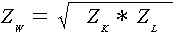
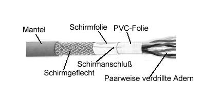
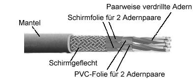
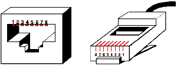
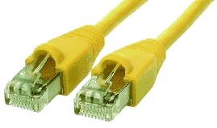
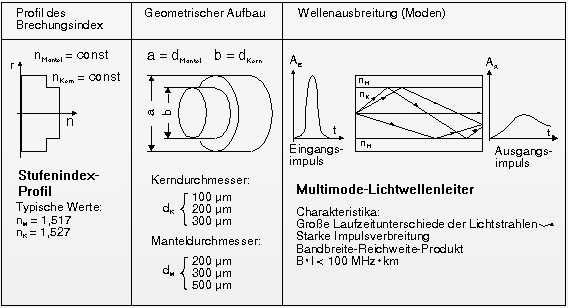
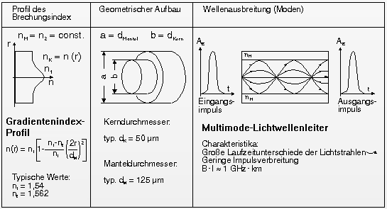
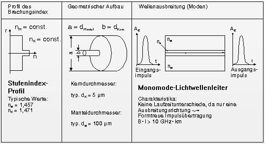

|
Grundlagen ComputernetzeProf. Jürgen Plate |
|
Grundlagen ComputernetzeProf. Jürgen Plate |
Für die Anwendung im Netz wesentlich wichtiger ist der Wechselstromwiderstand
des Kabels. Wenn wir ein kurzes Leitungsstück betrachten, bildet die
Leitung eine Induktivität L, die in Serie zum ohmschen Widerstand liegt.
Die nebeneinanderliegenden Leiter und der Rückleiter bilden eine Kapazität
C. Schließlich gibt es zwischen beiden Leitern noch einen sehr hohen
Isolationswiderstand G. Man kann das Leiterstück also durch eine Ersatzschaltung
wie im Bild annähern.
Das Kabel setzt sich dann aus vielen dieser kleinen Schaltungen zusammen, die hintereinandergeschaltet sind. Betrachtet man das Leitungsstück dx, in dem der Strom I(x,t) fliesst, so ergibt sich ein Spannungsabfall U(x,t) über L und R nach dem ohmschen Gesetz die linke Gleichung. Mit der Knotenregel erhalten wir ausserdem die rechte Gleichung:
Differenziert man die erste Gleichung nach x und eliminiert man den Term dI/dx bleibt eine Differentialgleichung für die Spannung U(x) übrig, die sogenannte Telegraphengleichung (analog läßt sich das für den Strom erledigen):
Als Lösung erhalten wir gedämpfte Wellen entlang des Leiters:
γ nennt man "komplexe Dämfungskonstante". Ihr Realteil α beschreibt die Dämpfung, der Imaginärteil β die Wellenzahl. Für eine verlustfreie Leitung mit R = 0 und G = 0 gilt α = 0 sowie:
Man nennt das Verhältnis von Spannung zu Strom in der Leitung analog dem ohmschen Gesetz "Wellenwiderstand" oder "Wellenimpedanz" Z. Durch Einsetzen der Gleichung erhält man:
Für den Fall einer sogenannten Widerstandsdämpfung (R > 0, aber G = 0) erhalten wir:
Damit ist für ω = R/L die Wellenzahl β nicht mehr genau proportional zu ω, sondern etwas größer. Die Phasengeschwindigkeit ω/β wird frequenzabhängig kleiner, d.h. wir haben "Dispersion"; Signale werden verzerrt übertragen. Auch Z ist dann frequenzabhängig und wird für kleine Frequenzen größer. Für hohe Frequenzen verschwindet die Dispersion.
Für die oben stehenden Gleichungen gilt, daß bei hohen Frequenzen die induktive Reaktanz viel größer ist als der ohmsche Widerstand (ωL >> R). Es wird ferner angenommen, daß die Ableitung verschwindend gering ist (G = 0). Es gilt:
Nach dieser Gleichung scheint α frequenzabhängig zu sein.
Hier kommt jedoch ein anderer Effekt zu Tage. Der "Skineffekt" bewirkt, dass die Stromdichte an der Oberfläche eines metallischen Körpers nach innen exponentiell abnimmt. Durch das elektromagnetische Feld des Stromes entstehen Wirbelströme im Leiter, durch welche ein nicht leitender Bereich in der Leitung entsteht. Der Leiterquerschnitt wird effektiv verringert und somit der Widerstand erhöht. Ein Gleichstrom I erzeugt ein konstantes Magnetfeld H. Für Wechselstrom erzeugt dI/dt entsprechend dH/dt. Ein magnetisches Wechselfeld dH/dt erzeugt seinerseits aber ein elektrisches Feld, was wieder den Strom I beeinflußt.
Die mittlere Eindringtiefe des Stromes ist frequenzabhängig:
(μ = Permeabilität ρ = Leitfähigkeit) Typische Werte sind für Kupfer bei 1 MHz 70μm, bei 1 GHz 2 μm. Der effektive Kabelwiderstand nimmt also mit der Frequenz zu; demzufolge hat man auch eine Frequenzabhängigkeit der Dämpfung. Um die Oberfläche des Leiters zu vergrößern und so die Leitfähigkeit zu verbessern, nimmt man für Hochfrequenz-Anwendungen oft Kupferfolien, mehrere Litzen oder - bei ganz hohen Frequenzen - Hohlleiter. Dazu ein Zahlenbeispiel: Das Koaxkabel RG 178 hat Z = 50Ω, R = 0,45 Ω/m, L = 240 nH/m und C = 95 pF/m. Bei 2 MHz und 100 m Länge wird das Signal um einen Drittel reduziert, bei 200 MHz sogar um 99%.
Die Sache ist in der Praxis noch komplizierter, da weitere Effekte hinzukommen.
Der Wellenwiderstand eines realen Kabels ist seine Kenngröße, die angibt, mit welchem Ohmschen Widerstand eine Leitung abgeschlossen werden muss, damit Anpassung erfolgt (keine Reflexionen). Zur Berechnung des Wellenwiderstandes werden die physischen Eigenschaften des Kabels benötigt, also konstante Größen, die von Leitungsmaterial und der Leitungsgeometrie abhängen. In der Informations- und Kommunikationstechnik werden üblicherweise Kabel und Leitungen mit einem Widerstand abgeschlossen, um Reflexionen der Signale an den Kabelenden zu vermeiden.
Mißt man den Wechselstromwiderstand eines Kabels indem man ein Wechselspannungssignal einspeist, erhält man den spezifischen Wellenwiderstand des Kabels. Dazu misst man den Strom bei offenen und kurzgeschlossenen Leitungsenden. Nach den Strommessungen berechnet man aus der Generatorspannung UG und gemessenem Strom den Kurzschluss- und Leerlaufwiderstand, RK und RL:
RK = UG/IK (= ZK) RL = UG/IL (= ZL)
Der Wellenwiderstand ZW der Leitung, ergibt sich aus Kurzschluss- und Leerlaufwiderstand:

Beim Ethernet ist der Wellenwiderstand auf 50 Ohm festgelegt. Die Grenzfrequenz ist erreicht, wenn die Ausgangsspannung 70% der Eingangsspannung erreicht hat. Die digitalen Signale, die auf das Netzwerkkabel geleitet werden, bilden auch eine (sehr oberwellenreiche) Wechselspannung.
Zu Beginn hat man sich beim Ethernet für Koaxialkabel entschieden. Sie bestehen aus einem äußeren Leiter, der einen innenliegenden Leiter vollständig umschließt und dadurch abschirmt. Die beiden Leiter sind durch einen Isolator elektrisch getrennt. Koaxkabel gibt es in verschiedenen Ausführungen, für das Ethernet werden Typen mit einem Wellenwiderstand von 50 Ohm verwendet. Die Konstruktion dieses Kabels ist aber nicht nur wegen der Abschirmung des inneren Leiters günstig, da sie noch einen anderes Phänomen der Hochfrequenztechnik ausnutzt: den oben beschriebenen Skineffekt.
Seit einigen Jahren werden fast nur noch verdrillte Zweidrahtleitungen (10BaseT) oder Glasfaserleitungen verwendet. Für einige Grundsatzbetrachtungen sind die Koaxialkabel aber immer noch interessant.
Die Definition des physikalischen Kanals ist aber nur ein Teil der IEEE
802.3-Spezifikation. Der Standard beschreibt physikalische Übertragung,
die auch unser Thema ist, und Zugriffsverfahren, die sogenannten Protokolle.
Auf der physikalischen Ebene sind Bezeichnungen wie 10Base5, 10Base2 und
10BaseT von Belang. Entscheidend sind dabei drei Parameter:
die Übertragungsrate, das Übertragungsverfahren (Basis- oder Breitband;
'Base' oder 'Broad') sowie Aussagen zur räumlichen Ausdehnung. Zur
Unterscheidung und Charakterisierung der einzelnen Übertragungsmedien
wurde folgende Systematik für die Kabelbezeichnung entwickelt:
<Datenrate in MBit/s><Übertragungsverfahren><Max. Länge/100 m>
Auch der Kabeltyp kann unterschiedlich sein. Vom Koaxkabel über Glasfasern bis zu verdrillten Zweidrahtleitungen ist alles vertreten.
An einen MAU kann über ein maximal 50 m langes Transceiverkabel eine Ethernet-Station angeschlossen werden. Maximal 100 Stationen können an einem Kabelsegment hängen. Der Biegeradius darf 20 cm nicht unterschreiten. Das Kabel muß zur Vermeidung von Reflexionen an beiden Enden mit einem 50-Ohm-Widerstand (1 Watt) terminiert werden.
Der Transceiver im MAU wird über einen TAP angeschlossen, bei dem Mittelleiter und Schirm kontaktiert werden, ohne das Kabel - und damit den Datenfluß auf dem Netz - zu unterbrechen.
Bei einem Defekt im Transceiverkabel wird das Netz nicht beeinflußt;
lediglich die betroffene Station ist von der Kommunikation getrennt. Die
paarweise verdrillten Leitungen im Transceiverkabel werden über Differenztreiber
angesteuert, auf Empfangsseite sitzen Differenzverstärker. Störungen
können sich so nur gering bemerkbar machen.
Das Yellow Cable ist heute veraltet und sollte für Neuinstallationen nicht mehr eingesetzt werden. Es ist aber noch relativ häufig anzutreffen. Bei Anschlußfehlern werden die benachbarten Teile des Netzes betroffen. Außerdem wird für den Anschluß des MAU ein Spezialwerkzeug benötigt.
| Pin | Signal | Pin | Signal |
|---|---|---|---|
| 1 | Schirm für Kollisionserkennung | ||
| 2 | Kollisionserkennung + | 9 | Kollisionserkennung - |
| 3 | Sendedaten + | 10 | Sendedaten - |
| 4 | Schirm für Empfangsdaten | 11 | Schirm für Sendedaten |
| 5 | Empfangsdaten + | 12 | Empfangsdaten - |
| 6 | Masse | 13 | + 12 bis 15 V DC |
| 7 | Control Out + | 14 | Schirm für Stromversorgung |
| 8 | Schirm für Control Out | 15 | Control Out - |
Die 50-Ohm-Abschlußwiderstände sind in BNC-Stecker integriert und werden bei den beiden äußeren Stationen direkt auf das T-Stück gesetzt. Ein Defekt im Kabel, das ja an allen Stationen über die T-Stücke angeschlossen ist, betrifft somit auch alle Stationen.
Das direkte Vorbeischleifen des Kabels am Interface ist für das 10Base2-Interface zwingend notwendig, ein Verlängern des T-Stückes mit einer 'Stichleitung' ist aufgrund der Funktionsweise des Transceivers nicht möglich. Wenn man versuchen würde, einen 10Base2-Anschluß durch eine Stichleitung zu verlängem, wäre die saubere Ausbreitung der Welle nicht mehr gewährleistet und Reflexionen am Anfang und Ende der Stichleitung die Folge.
Den Nachteil des Vorbeischleifens macht das 10Base2-Kabel dadurch wett, daß es bei deutlich geringerem Preis einfacher zu verlegen ist als das herkömmliche Ethernet. Moderne Netzwerkkarten bieten übrigens Anschlußmöglichkeiten für Transceiver-Kabel (also konventionelles Ethernet), für BNC-T-Stücke (10Base2) und für 10BaseT-Kabel (siehe unten) und sind standardmäßig mit einem OnBoard-Transceiver ausgestattet. Damit ist eine große Flexibilität in der Installation gegeben, es muß lediglich auf der Netzwerkkarte die gewünschte Konfiguration eingestellt werden.
Das oben erwähnte T-Stück wird direkt an der Netzwerkkarte angeschlossen, die im Rechner eingebaut ist. Sollte es sich um den ersten bzw. letzten Rechner im Segment handeln, so wird dieser auch mit einem T-Stück angeschlossen. Jedoch wird hier der freibleibende Anschluß durch einen 50 Ohm-Abschlußwiderstand bestückt. Der Kabelanfang und das Kabelende müssen jeweils mit einem 50 Ohm Abschlußwiderstand abgeschlossen werden.
Die Verlängerung der einzelnen Segmente erfolgt mit Repeatern. Sie werden als Signalverstärker zwischen die einzelnen Segmente geschaltet. Mittels Multiportrepeatern kann man das Netzwerk an diesen Stellen auch aufsplitten und in verschiedene Einzelsegmente aufteilen. Allerdings sollte immer darauf geachtet werden, daß bei einer solchen Installation nicht zu viele Arbeitsplätze angeschlossen werden. Jede Arbeitsstation bedeutet zusätzliche Netzlast. Je geringer die Netzlast ist, desto höher ist die Arbeitsgeschwindigkeit des Netzwerkes.
Allerdings ist die BNC-Verkabelung - wie das Yellow Cable - ein aussterbender Standard, da man mit dieser Technik bereits an die Grenzen des technisch Möglichen angelangt ist. Die Übertragungsgeschwindigkeit von 10 Mbit/s kann hier nicht überschritten werden kann. Für "Wohngemeinschaftsnetze" wird es wegen seiner Preisgünstigkeit aber immer noch verwendet.
Zum Anschluß mehrerer Stationen müssen sogenannte Hubs (engl. "Hub" = Nabe eines
Speichenrades) eingesetzt werden, es lassen sich dann bis zu 1024 Stationen
miteinander koppeln. Als Verbinder kommen normalerweise RJ-45-Stecker (Western-Stecker)
und -Dosen zum Einsatz. Auch hier werden wieder Differenztreiber und -empfangsverstärker
eingesetzt. Der Pegel wechselt zwischen -2,5 V und +2,5 V.
Mit der Twisted-Pair-Verkabelung hielt auch eine kaum überschaubare Anzahl
unterschiedlicher Kabelvarianten Einzug in die Datentechnik. UTP, FTP, S/UTP, S/STP oder
ITP beschreiben den Kabelaufbau, CAT 3, 5 oder 7 beschreiben die Kategorie
hinsichtlich der Anforderung der Kabel und Steckverbinder. Die Kabelklasse (A - 100 kHz,
B - 1 MHz, C - 16 MHz, D - 100 MHz, E - 300 MHz, F - 600 MHz) definiert die Anforderungen
hinsichtlich der Übertragungsbandbreite.
| Kategorie | 1 | 2 | 3 | 4 | 5 | |||||
|---|---|---|---|---|---|---|---|---|---|---|
|
Übertragungs- geschwindigkeit (Mbit/s) |
4 | 10 | 16 | 100 | ||||||
| Frequenz (MHz) |
Dämpfung (dB/100m) |
NEXT (dB) |
Dämpfung (dB/100m) |
NEXT (dB) |
Dämpfung (dB/100m) |
NEXT (dB) |
Dämpfung (dB/100m) |
NEXT (dB) |
Dämpfung (dB/100m) |
NEXT (dB) |
| 1 | 2,6 | 2,6 | 41 | 2,1 | 56 | 2,1 | 62 | |||
| 4 | 5,6 | 32 | 4,3 | 47 | 4,3 | 53 | ||||
| 8 | 8,5 | 28 | 6,2 | 42 | 5,9 | 48 | ||||
| 10 | 9,9 | 26 | 7,2 | 41 | 6,6 | 47 | ||||
| 16 | 13,1 | 23 | 8,9 | 38 | 8,2 | 44 | ||||
| 20 | 10,2 | 36 | 9,2 | 42 | ||||||
| 25 | 10,5 | 41 | ||||||||
| 31,25 | 11,8 | 40 | ||||||||
| 62,5 | 17,1 | 35 | ||||||||
| 100 | 22 | 32 | ||||||||
Bemerkung :
Bei Kategorie 1 liegt die Impedanz im Bereich von
84 bis 113 Ohm
Bei Kategorie 2 - 5 beträgt die Impedanz 100
Ohm ± 15%
Die Bauart der Kabel hat einen ganz wesentlichen Einfluß auf die Störleistungsunterdrückung und damit die Störsicherheit der Kabel. Während UTP-Kabel eine typische Störteistungsunterdrückung von 40 dB haben, erreichen S/STP-Kabel Werte bis zu 90 dB.


Die Preisunterschiede zwischen Cat-3-Kabeln und Cat-5-Kabeln ist so gering, daß es sich bei Neuinstallation auf jeden Fall empfiehlt, Cat-5-Kabel einzusetzen - schon, um mit 100 MBit/s arbeiten zu können.
| Elektrische Eigenschaften für installierte 100-Ohm-Kabel gemäß DIN EN 50173 bzw. ISO/IEC 11801, Kategorie 5 | |
|---|---|
| Größter Schleifenwiderstand | 300 Ohm/km |
| Größter Widerstandsunterschied | 3 % |
| Isolationswiderstand | 150 MOhm x km |
| Impedanz Zo bei 0,064 MHz | 125 Ohm +/- 25% |
| Impedanz Zo bei 1 - 100 MHz | 100 Ohm +/- 15% |
| Kopplungswiderstand | bei 10 MHz < 100 Ohm/km |
| Rückflußdämpfung an 100 m Länge: 1..20 MHz | >23 dB |
| Rückflußdämpfung an 100 m Länge: >20 MHz | 23 dB - 10 log (f/20) |
| Erdunsymmetriedämpfung dB/BZL = 1000 m | bei 64 kHz > 43 dB |
| Größte Erdkopplung bei 0,001 MHz | 1600 pF/km |
| Kleinste Ausbreitungsgeschwindigkeit bei 1 MHz | 0,60 c |
| Kleinste Ausbreitungsgeschwindigkeit bei 10 MHz | 0,65 c |
| Kleinste Ausbreitungsgeschwindigkeit bei 100 MHz | 0,65 c |
Die konventionelle Twisted-Pair-Ethernet-Verkabelung verwendet RJ-45-Steckverbinder. Auch hier gibt es die unterschiedlichsten geschirmten und ungeschirmten Ausführungen. Sie sind für den industriellen Einsatz nur teilweise geeignet. Von den acht Leitungen des RJ45-Steckers werden nur vier verwendet:
|  |
|
Zwischen Rechner und Hub verbindet das Kabel die beiden Stecker 1:1. Bei
speziellen Kabeln für die direkte Verbindung zweier Computer oder für
das Kaskadieren von Hubs müssen die Leitungen gekreuzt werden. Die
Verbindung ist dann:
|  |
Die RJ-45-Buchsen sind inzwischen auch keine profanen Steckkontakte mehr, sondern in ihnen sind auch gleich Übertrager, Drosseln und Widerstände integriert. Damit wird nicht nur Leiterplattenplatz eingespart, sondern auch bessere EMV-Eigenschaften erzielt und Layoutfehler vermieden. Das folgende Bild zeigt die elektrische Beschaltung einer solchen Buchse:
Die Übertrager sorgen gleichzeitig für eine Potentialtrennung zwischen der Buchse und der restlichen Schaltung und für die Ausblendung von Störungen. Im folgenden Bild ist eine typische Buchse für die Platinenmontage abgebildet und darunter sind die Abmessungen (Vorder- und Seitenansicht) gezeigt. Oft sind in die Buchsen noch ein oder zwei LEDs integriert.
Wie gesagt, verlegt man pro Rechner ein eigenes Kabel. Während BNC-Netze eine Bus-Struktur haben, zeichnen sich Twisted-Pair-Netze durch eine Baumstruktur aus. Die einzelne Kabellänge zu einem Rechner darf 100 m nicht überschreiten. Die Anzahl der im Netz verfügbaren Rechner ist abhängig von den eingesetzten Repeatern, die hier "Hub" heißen (4-Port, 8-Port; usw.).
Mehr dazu steht im Kapitel über Twisted-Pair-Verkabelung.
Die Ursache dafür liegt in der sich ändernden Ausbreitungsgeschwindigkeit. Diese hat in jedem Medium einen anderen Wert. In einem optisch dichteren Medium bewegt sich Licht langsamer fort als in einem optisch dünneren. Das Verhältnis der Lichtgeschwindigkeit c in Vakuum zur Lichtgeschwindigkeit v in einem anderen Medium ergibt die Brechzahl:
n = c/v
Typische Werte für die Brechzahl sind:
für Glas etwa 1,5,
für Wasser 1,33 und
für das Vakuum 1.
Bei jedem Medienübergang wird ein Teil des Lichts reflektiert je stumpfer der Einfallswinkel, desto stärker die Reflexion. Der Reflexionsgrad hängt vom Unterschied der beiden optischen Dichten und vom Einfallswinkel ab. Erreicht der Einfallswinkel einen kritischen Wert, gelangt überhaupt kein Licht aus dem Medium mit der höheren Brechzahl heraus. Auf dieser Totalreflexion beruht das Prinzip des Lichtwellenleiters. Die Aufgabe des Leiters besteht ja darin, das Licht verlustlos und ohne Impulsverformung über lange Strecken zu transportieren. Da sich Licht aber nach allen Seiten ausbreitet, muß man einen Käfig bauen, der das Licht im Leiter hält. Denn bei jeder Biegung des Kabels würde sonst nur ein Bruchteil des ursprünglichen Lichts im Kabel verbleiben und eine längere Übertragungsstrecke wäre völlig unmöglich. Deshalb konstruiert man den Lichtwellenleiter als optische Röhre. Im Innern der Röhre kann sich das Licht ungehindert fortpflanzen und an den Wänden wird es total reflektiert. So wird der Lichtstrahl gezwungen, sich innerhalb der Faser fortzubewegen.
Der LWL mit dem einfachsten Aufbau besteht aus einem konzentrischen optischen Kern mit einer hohen Brechzahl n1, der mit einem optischen Mantel kleinerer Brechzahl n2 versehen ist. Licht, das in einem gewissen Winkelbereich in den LWL eintritt, wird durch fortlaufende Totalreflexion an der Grenze Kern/Mantel weiterbefördert.
Neben dem reinen Transport ist die Verformung, die die Lichtimpulse während der Leitung erleiden, von Bedeutung. Sehen Sie sich dazu das Einspeisen des Lichts in den LWL etwas genauer an: Trifft das Licht in einem Winkel nahe dem maximalen Einfallswinkel für den Lichtleiter auf, wird es sehr oft im LWL reflektiert. Es heißt dann Licht hohen Modes. Entsprechend heißt Licht, welches in relativ guter Übereinstimmung mit der optischen Achse des LWL eintrifft, Licht niedrigen Modes. Licht hohen Modes legt insgesamt einen längeren Weg im Kabel zurück und benötigt dadurch mehr Zeit für den Durchlauf. Fällt nun Licht mit nicht genau definiertem Winkel in den LWL ein, kommt es bis zum Ausgang wegen der unterschiedlichen Laufzeiten für jeden Einfallswinkel zu einer Dehnung des Lichtimpulses. Dieser unschöne Effekt, die Dispersion, verbreitert die Signalimpulse und beschränkt damit die erreichbare Übertragungsrate.
Unter Dispersion versteht man die Verbreitung eines Lichtimpulses durch Laufzeitunterschiede (Gruppenlaufzeit) der Moden (Eigenwellen), was eine Begrenzung der Übertragungsbandbreite von LWLs zur Folge hat. Man unterscheidet die Modendispersion und die chromatische Dispersion, die sich aus Materialdispersion und Wellenleiterdispersion zusammensetzt. Die Modendispersion ist ein Effekt der unterschiedlichen Signallaufzeiten der Moden, was zu einer Signalverzerrung führt. Die Materialdispersion, auch Manteldispersion bezeichnet, ist die Wellenlängenabhängigkeit der Brechzahl eines Materials. Die Wellenleiterdispersion (Waveguide Dispersion) ist gerade bei Singlemode-LWL von Bedeutung und bezieht sich auf die Wellenlängenabhängigkeit der Lichtverteilung zwischen Kern und Mantel. Die nutzbare Übertragungsbandbreite ist umgekehrt proportional zur Dispersion. Die Dispersion wird in einer Zeit- zu Längeneinheit (ns/km) angegeben und ist der reziproke Wert des Bandbreitenlängenproduktes. Beispiel: Dispersion 5ns/km <-> Bandbreite 200 MHz * km.
Abhilfe schafft ein nach außen hin stetig abnehmender Brechungsindex.
Dadurch gleichen sich die Geschwindigkeiten und Laufzeiten für die
verschiedenen Einfallswinkel bei genügender Kabellänge wieder
aus. Wegen des stetigen Übergangs von Kern zu Mantel werden diese Leiter
Gradientenprofilfasern genannt. Es ergibt sich beim Einfall der unterschiedlichen
Lichtwellen trotz unterschiedlich langer Wege in der Faser eine nahezu gleiche
Laufzeit aller Wellen.
Eine noch geringere Dispersion liefern die
Monomode-Fasern. Im Gegensatz zu den Multimode-Fasern leiten sie nur Licht
einer bestimmten Wellenlänge. Ihr Kerndurchmesser ist so klein, daß
sich das Licht fast nur noch entlang der Längsachse ausbreiten kann.
Mit diesen Monomode-Fasern sind also die steilsten Flanken und damit die
größten Übertragungsraten zu erzielen.
Typische LWL haben folgende Daten.
Multimode-Stufenindex-FaserMultimodefasern mit Stufenprofil haben einen Durchmesser von 200 µm. Durch sie werden mehrere Lichtwellen gleichzeitig geschickt. An den Wänden der Faser wird das Signal hart reflektiert. Das Ausgangssignal wird dadurch verbreitert (je nach Einfallswinkel dauert das Signal unterschiedlich lang, weil der Weg mal länger und mal kürzer ist) und bedämpft. Sie werden z.B. als Verbindungskabel beim Patchfeld verwendet. |  |
Multimode-Gradienten-FaserMultimodefasern mit Gradientenprofil haben einen Durchmesser von 50 µm. Durch sie werden mehrere Lichtwellen gleichzeitig geschickt. An den Wänden der Faser wird das Signal weich reflektiert. Das Ausgangssignal wird zwar auch verbreitert, aber nicht so stark bedämpft. Sie werden für Verbindungen von Gebäuden oder Etagen eingesetzt. |  |
Monomode-Stufenindex-FaserMonomode-Fasern (Singlemode-Fasern) haben einen Durchmesser von 10 µm. Durch sie werden die Lichtwellen gerade hindurchgeleitet. Das Signal wird wenig bedämpft und auch nicht verbreitert. So ist eine hohe Bandbreite möglich. Sie werden für weite Strecken eingesetzt. |  |
Als Sender für die LWL-Übertragung stehen Leuchtdioden (LEDs) und Laserdioden (LD) zur Verfügung. dabei werden LEDs am besten im Bereich von 850/860 nm eingesetzt und LDs im Bereich von 1300 nm.
| LED | LD | |
|---|---|---|
| Licht-Typ | inkohärent | kohärent |
| Wellenlänge | 850/860 nm und 1300 nm | 1300 nm |
| Spektralbreite | 30 - 40 nm | 1 - 3 nm |
| Abstrahlwinkel | mittel bis hoch | gering |
| einkoppelbare Leistung | gering | hoch |
| Lebensdauer | 106 Stunden | 105 Stunden |
Die unten stehende Abbildung zeigt die Zusammenhänge von Faserart und Sendertyp im Hinblick auf das Einsatzgebiet bezüglich Übertragungsstrecke und Übertragungsrate.
Die optischen Sender und Empfänger (meist Laserdioden) müssen genau auf die Faser abgestimmt sein, um verlustarm und reflexionsfrei übertragen zu können. Ein großes technisches Problem beim Verlegen von LWL ist immer noch der Übergang von einem Leiterstück auf ein anderes, das sogenannte 'Spleißen'. Im Gegensatz zum elektrischen Leiter, bei dem eine Klemm- oder Lötverbindung ohne große Sorgfalt genügt, müssen die Glasfasern genau in der optischen Achse plan miteinander verschweißt werden. Unter Laborbedingungen stellt das natürlich längst kein Problem mehr dar, aber im mobilen Einsatz sieht das schon etwas anders aus.
Beim sogenannten 'Spleißen' von Glasfaserkabeln gibt es zahlreiche Fehlermöglichkeiten. Das beginnt nach dem Entfernen des Sekundärschutzes mit mangelhaftem Reinigen der Faser. Weitere Fehlermöglichkeiten sind zu sparsame Verwendung des Leims zum Verkleben der Faser im Kontaktkörper oder zu wenig Sorgfalt beim anschließenden Schleifen der Kontaktfläche. Das beste 'Meßinstrument' ist hier eine Lupe mit mindestens 10-facher Vergrößerung. Man leitet sichtbares Licht in die Faser und prüft die Fläche auf Verunreinigungen oder Kratzer. Zum Reinigen der Kontaktfläche verwendet man nicht-denaturierten reinen Alkohol.
Link-Segmente mit FOIRL-Geräten können bis zu 1000 m lang sein und Segmente mit 10Base-F Geräten bis zu 2000 m.
Maximale Länge von Glasfaserkabeln ohne Verstärkung:
| Typ | Stufenindex | Gradientenindex | Monomode |
|---|---|---|---|
| Dämpfung | 20dB/km bei 900nm | 3dB/km bei 850nm | 0,1dB/km bei 1300nm |
| Bitratenlängen- produkt | 5 MHz * km | 1,5 GHz * km | 250 GHz * km |
| max. Länge (ohne Repeater) | 1 km | 10 km | 60 km/100 km |
STP- und Fiber-Standards sind verabschiedet, zur Festlegung des UTP-Standards wurde ein eigenes IEEE-802.3ab-Subkommitee gebildet. Dieses hat das Ziel, einen Standard für eine Reichweite von 100m auf UTP Cat. 5 Kabeln zu erzielen.
Anmerkung: Die "Schlaglänge" ist die Länge (z. B. in Millimetern), bei der sich eine Ader vom Anfangspunkt A bis zum Endpunkt B einmal um 360 Grad gedreht hat.
Zusammenfassung: 1000Base-T auf UTP Kabeln
Gegenüberstellung Ethernet - fast Ethergent - Gigabit-Ethernet
| Ethernet | Fast Ethernet | Gigabit Ethernet | |
|---|---|---|---|
| Standard | IEEE 802.3 | IEEE 802.3u | IEEE 802.3z |
| Datenrate | 10 Mbit/s | 100 Mbit/s | 1000 Mbit/s |
| Zeitdauer eines Bits | 100 ns | 10 ns | 1 ns |
| Kollisionsfenster | 51,2 µs | 5,12 µs | 0,512 µs |
| Größtes Datenpaket | 1518 Byte | ||
| Kleinstes Datenpaket | 64 Byte | 512 Byte (kleinere Datenpakete mit Carrier Extension) | |
Muss Carrier Extension eingesetzt werden, steigt auch der Overhead des Ethernet-Protokolls. Um dieses Anwachsen möglichst zu kompensieren, führt Gigabit Ethernet das Frame Bursting ein, das ebenfalls auf dem Physical Layer integriert wird. Dabei wird im Physical Layer versucht, mehrere kurze Datenblöcke in einen Ethernet-Frame zu packen, um so die erforderliche Mindestlänge von 512 Byte ohne den Einsatz von Carrier Extension zu erreichen.
Im Gegensatz zu Ethernet und Fast Ethernet werden bei Gigabit Ethernet alle vier Paare eines Twisted Pair-Kabels verwendet. Damit können im Vollduplex-Betrieb die Daten Ober jeweils zwei Paare gleichzeitig gesendet und empfangen werden.
Für die Optik-Version bestehen folgende Randbedingungen:
| Bezeichnung | Medium | mm | Max. Länge (m) |
| 1000Base-SX | Multimode Fiber (850nm) | 62,5 | 260 |
| 1000Base-SX | Multimode Fiber (850nm) | 50 | 550 |
| 1000Base-LX | Multimode Fiber (850nm) | 62,5 | 440 |
| 1000Base-LX | Multimode Fiber (850nm) | 50 | 550 |
| 1000Base-LX | Monomode Fiber | 8,3 | 3000 |
Die folgende Tabelle fasst nochmals knapp alle Medien zusammen:
| Bezeichnung | Datenrate [MBit/s] | Übertragungsmedium | IEEE-Norm |
|---|---|---|---|
| 10Base5 | 10 | RG 8 Koaxialkabel 50 Ohm, 500 m Segmentlänge | 802.3 |
| 10Base2 | 10 | RG 58 Koaxialkabel 50 Ohm, 200 m Segmentlänge | 802.3a |
| 10Broad36 | 10 | Koaxialkabel 75 Ohm, max.Ausdehnung 3600 Meter | 802.3b |
| 10BaseT | 10 | Twisted Pair Kabel, Kat.3, 100 m Segmentlänge | 802.3i |
| 10BaseFL | 10 | MMF-Lichtwellenleiter, 850 nm, 2000 m Segmentlänge | |
| 10BaseFB | 10 | MMF-Lichtwellenleiter, 850 nm, 2000 m Segmentlänge | |
| 100Base-TX | 100 | Twisted Pair Kabel, Kat.5, 100 m Segmentlänge | |
| 100Base-T2 | 100 | Twisted Pair Kabel, Kat.3, 100 m Segmentlänge, 2x2 Adern | |
| 100Base-T4 | 100 | Twisted Pair Kabel, Kat.3, 100 m Segmentlänge, 4x2 Adern | |
| 100Base-FX | 100 | MMF-Lichtwellenleiter, 1300 nm, 2000 m Segmentlänge | |
| 1000Base-T | 1000 | Twisted Pair Kabel, Kat.5, 100 m Segmentlänge | 802.3ab |
| 1000Base-SX | 1000 | MMF-Lichtwellenleiter, 830 nm, 550 m Segmentlänge | 802.3z |
| 1000Base-LX | 1000 | MMF-Lichtwellenleiter, 1270 nm, 5000 m Segmentlänge | 802.3z |
| 1000Base-CX | 1000 | Twinax-Kupferkabel, 150 Ohm, 25 m Segmentlänge | 802.3z |
| 10GBase-SR | 10 | seriell, Lichtwellenleiter, 850 nm, 2-300 m, ohne WAN-Anpassung | |
| 10GBase-SW | 10 | seriell, Lichtwellenleiter, 850 nm, 2-300 m, mit WAN-Anpassung | |
| 10GBase-LR | 10 | seriell, Lichtwellenleiter, 1310 nm, 2-10.000 m, ohne WAN-Anpassung | |
| 10GBase-LW | 10 | seriell, Lichtwellenleiter, 1310 nm, 2-10.000 m, mit WAN-Anpassung | |
| 10GBase-ER | 10 | seriell, Lichtwellenleiter, 1550 nm, 2-40.000 m, ohne WAN-Anpassung | |
| 10GBase-EW | 10 | seriell, Lichtwellenleiter, 1550 nm, 2-40.000 m, mit WAN-Anpassung | |
| 10GBase-LX4 | 10 | Lichtwellenleiter, 1310 nm, 2-10.000 m, WWDM-Technik m. 4 Kanälen |
| Bezeichnung | Bedeutung |
|---|---|
| 10 LNK | Diese LED signalisiert, dass die Karte im 10 MBit/s-Mode (Standard-Ethernet) arbeitet. |
| 100 LNK | Diese LED signalisiert, dass die Karte im 100 MBit/s-Mode (Fast-Ethernet) arbeitet. |
| ACT Action | Es werden Daten gesendet oder empfangen, wenn diese LED aktiv ist. |
| COL Collision | Die LED blinkt bei auftretenden Datenkollisionen (CSMA/CD). |
| FDX Full Duplex | Diese LED signalisiert, dass eine Voll-Duplex-Verbindung besteht, also gleichzeitiges Senden und Empfangen möglich ist. |
| Link (Beat) Link | Die LED leuchtet, wenn eine Netzwerkverbindung besteht (Kabel angeschlossen, Datenverbindung möglich, usw.). |
| LNK Link | Die LED leuchtet, wenn eine Netzwerkverbindung besteht (Kabel angeschlossen, Datenverbindung möglich, usw.). |
| NML Normal | Der Hub arbeitet in der normalen Betriebsart und kann zum Test per Schalter in einen Testmodus geschaltet werden, woraufhin diese Diode dann nicht leuchtet. |
| POL Polarity | Diese LED ist eher selten zu finden und ist normalerweise aus. Sie leuchtet nur dann, wenn die Polarität der Datenempfangsleitungen vertauscht ist. In der Regel können Netzwerkkarten mit einer derartigen Anzeige automatisch die richtige Polarität herstellen, und dann leuchtet auch die LED. |
| PWR Power | Die Spannungsversorgung des Hubs ist vorhanden, wenn diese LED leuchtet. |
| REC Receive | Die LED blinkt, wenn gerade Daten von der Einheit empfangen werden. |
| RX (DATA) Receive Data | Die LED blinkt, wenn gerade Daten von der Einheit empfangen werden. |
| T/R Transceive/Receive | Die LED blinkt, wenn gerade Daten von der Einheit gesendet oder empfangen werden. |
| TX (DATA) Transmit Data | Die LED blinkt, wenn gerade Daten von der Einheit gesendet werden. |
Die Receive- und Transmit-Leuchtdioden sind nützlich, um den augenblicklichen Status einer Netzwerkkarte ablesen zu können. Falls keine LED leuchten will, ist der Treiber für die Karte wahrscheinlich (noch) nicht korrekt installiert worden oder die Karte wurde nicht korrekt mit dem Netz verbunden. Die Anzeige LNK (Link) oder ACT (Activity) sollte auf jeden Fall dann leuchten, wenn das Netzwerk aktiv ist. Außerdern sollte an einer Netzwerkkarte auch die Receive-Anzeige leuchten oder blinken, wenn Pakete im Netz übertragen werden.
Unter Windows XP wird in der ACPI-Spezifikation festgelegt, dass WOL einen Rechner aus den Zuständen S3 (Suspend-to-RAM), S4 (Suspend-to-Disk) und S5 (Soft-Off) aufwecken kann. Die Optionen werden an unterschiedlichen Stellen in den Eigenschaften der Netzwerkkarte (erreichbar über den Geräte-Manager) konfiguriert.
Bei Linux deaktivieren viele Netzwerkkarten-Treiber die WOL-Funktion nach dem Starten des Interfaces. Um diese nun wieder zu aktivieren, benutzen wir das Programm ethtool, das in vielen Fällen nützlich ist. Durch den Aufruf unter Angabe des Netzwerk-Interfaces erhalten Sie alle Informationen über die Netzwerkkarte:
# ethtool eth0
Settings for eth0:
Supported ports: [ TP ]
Supported link modes: 10baseT/Half 10baseT/Full
100baseT/Half 100baseT/Full
1000baseT/Full
Supports auto-negotiation: Yes
Advertised link modes: 10baseT/Half 10baseT/Full
100baseT/Half 100baseT/Full
1000baseT/Full
Advertised auto-negotiation: Yes
Speed: 1000Mb/s
Duplex: Full
Port: Twisted Pair
PHYAD: 0
Transceiver: internal
Auto-negotiation: on
Supports Wake-on: umbg
Wake-on: d
Current message level: 0x00000007 (7)
Link detected: yes
Wichtig sind die beiden Zeilen
Supports Wake-on: umbg Wake-on: gDie erste Zeile listet die Möglichkeiten des Weckrufs auf. Bei meiner Karte werden u, m, b und g unterstützt. Die Bedeutung der Buchstaben zeigt folgende Tabelle:
| Code | Bedeutung |
|---|---|
| p | Wake on phy activity |
| u | Wake on unicast messages |
| m | Wake on multicast messages |
| b | Wake on broadcast messages |
| a | Wake on ARP |
| g | Wake on MagicPacket |
| s | Enable SecureOn password for MagicPacket |
| d | Disable (wake on nothing) |
Wie man an der zweiten Zeile sieht, ist das WOL derzeit deaktiviert. Um WOL per Magic Packet zu aktivieren, genügt der Kommandoaufruf ethtool -s eth0 wol g. Damit man das nicht nach jedem Reboot des Rechners das Kommando von Hand eingeben muss, schreibt man es am besten in die Datei /etc/rc.local. Debian-User vermerken NETDOWN=no in der Datei /etc/default/halt, damit die Netzwerkkarte eingeschaltet bleibt.
Wie nun den Rechner aufwecken? Das Magische am "Magic Packet" ist gar nicht so magisch: Es wird ein Datenpaket an den Rechner gesendet, das aus sechs Bytes mit dem hexadezimalen Wert 0xFF besteht. Dann folgt 16-mal die Hardwareadresse (MAC-Adresse) der Netzwerkkarte. Die Daten können als nacktes Ethernet-Paket gesendet werden, oder per UDP bzw. TCP. Bei den meisten Linux-Distributionen ist ein Perl-Programm namens "wakeonlan" von Jose Pedro Oliveira enthalten, welches mit allem Komfort arbeitet. Es kann beispielsweise die MAC-Adressen der zu weckenden Rechner aus einer Datei lesen, einen ARP-Eintrag für die IP-Adresse hinzufügen usw.
Die einfachste Form des Weckrufs benötigt aber nur wenige Zeilen Perl. Die folgende Funktion überprüft zunächst, ob ihr eine gültige MAC-Adresse (xx:xx:xx:xx:xx:xx) übergeben wurde, und sendet dann den Weckruf per Broadcast aus. Die MAC-Adresse(n) werden auf der Kommandozeile übergeben:
use strict;
use warnings;
use Socket;
while (@ARGV)
{ send_wol_broadcast(shift(@ARGV)); }
sub send_wol_broadcast
{
my $mac = shift;
die "Fehler in MAC-Addrese $mac\n"
if ($mac !~ /([0-9a-f]{2}:){5}[0-9a-f]{2}/i);
# Doppelpunkte entfernen
$mac =~ tr/://d;
# Magic Packet: 6 x FF, 16 x MAC-Adresse
my $magic = ("\xff" x 6) . (pack('H12', $mac) x 16);
# Create socket
socket(S, PF_INET, SOCK_DGRAM, getprotobyname('udp'))
or die "Oops - Socket: $!\n";
# Enable broadcast
setsockopt(S, SOL_SOCKET, SO_BROADCAST, 1)
or die "Oops - Setsockopt: $!\n";
# Paket senden
die "Oops - Send: $!\n" unless
defined(send(S, $magic, 0, sockaddr_in(0x2fff, INADDR_BROADCAST)));
close(S);
}
Die zweite Version adressiert nur den Zielrechner über seine IP-Adresse. Dazu
muss aber gegebenenfalls die Zuordnung MAC-Adresse zu IP-Adresse in die
ARP-Tabelle geschrieben werden. Leider unterscheidet sich das entsprechende
Kommando bei Linux und Windows bei der Angaben der MAC-Adresse:
Linux: arp -s 197.54.85.222 00:aa:00:62:c6:09 Windows: arp -s 197.54.85.222 00-aa-00-62-c6-09Im folgenden Listing sind beide Varianten berücksichtigt, da das Betriebssystem bekanntlich über die Variable $^O ermittelt werden kann. Zum Absetzen des arp-Kommandos sind jedoch auf jeden Fall Root-Rechte erforderlich.
use strict;
use warnings;
use Socket;
while (@ARGV)
{send_wol_packet(shift(@ARGV),shift(@ARGV)); }
sub send_wol_packet
{
my $mac = shift;
my $ip = shift;
my $iaddr;
die "Fehler in MAC-Addrese $mac\n"
if ($mac !~ /([0-9a-f]{2}:){5}[0-9a-f]{2}/i);
die "Fehler in IP-Adresse $ip\n"
if (! defined($iaddr = inet_aton($ip)));
# ARP-Eintrag schreiben
if ($^O =~ /MSWIn/)
{ $mac =~ s/:/-/g; } # NUR bei Windows
system("arp -s $ip $mac") == 0
or die "Warning: arp command failed, you need to be root\n";
# Doppelpunkte entfernen
$mac =~ tr/://d; # fuer Linux
$mac =~ tr/-//d; # fuer Windows
# Magic packet: 6 x FF, 16 x MAC-Adresse
my $magic = ("\xff" x 6) . (pack('H12', $mac) x 16);
# Create socket
socket(S, PF_INET, SOCK_DGRAM, getprotobyname('udp'))
or die "Oops - Socket: $!\n";
# Paket senden
die "Oops - Send: $!\n" unless
defined(send(S, $magic, 0, sockaddr_in(0x2fff, $iaddr)));
close(S);
}
In der Regel funktioniert eine Verbindung im Ethernet auch ohne weitere Konfiguration. Um die verfügbare Bandbreite optimal auszunutzen, gilt es einige Grundregeln: Die Duplexeinstellung mussebei beiden Linkpartnern gleich sein. Also entweder beide Seiten eines Link auf Autonegotiation oder beide Seiten fest auf die selben Parameter einstellen. Viele preiswerte Switches bieten keine Einstellmöglichkeiten und arbeiten immer mit Autonegotiation. Die Netzwerkkarten der angeschlossenen Clients müssen also auch auf "Auto" stehen.
Zur Anzeige der aktuellen Parameter wird "ethtool" mit dem entsprechenden Interface als Parameter aufgerufen. Hier die Ausgabe für das Interface eth0:
netzmafia:~# ethtool eth0
Settings for eth0:
Supported ports: [ TP MII ]
Supported link modes: 10baseT/Half 10baseT/Full
100baseT/Half 100baseT/Full
Supports auto-negotiation: Yes
Speed: 10Mb/s
Duplex: Half
Port: MII
PHYAD: 0
Transceiver: internal
Auto-negotiation: off
Supports Wake-on: d
Wake-on: d
Mit ethtool ist es auch möglich, Einstellungen der Netzwerkkarte zu verändern. Das folgende Kommando stellt das Interface eth0 auf 100 MBit/s und Halbduplex ein.
ethtool -s eth0 speed 100 duplex halfFür "speed" sind die Parameter 10, 100 und 1000 erlaubt. Der Duplexmode kann auf "half" oder "full" eingestellt werden. Autonegotiation wird mit dem Paramter "autoneg on" eingeschaltet und mit "autoneg off" abgeschaltet.
ethtool -s eth0 autoneg onFür Netzwerkinterfaces die WakeOnLAN (WOL) beherrschen (siehe oben), bietet ethtool auch einige Konfigurationsoptionen. Der Benutzer kann festlegen welche Art von Frame ein Aufwachen auslösen soll und ein Kennwort für Wake-on-LAN festlegen. Nicht alle Interfaces unterstützen diese Option.
ethtool -s eth0 wol <argument>Das Argument von "wol" ist eine Kombination aus folgenden Buchstaben:
p Wake on phy activity
u Wake on unicast messages
m Wake on multicast messages
b Wake on broadcast messages
a Wake on ARP
g Wake on MagicPacket(tm)
s Enable SecureOn(tm) password for MagicPacket(tm)
d Disable (wake on nothing).
Die Option "d" löscht auch alle anderen Optionen.
ethtool -s eth0 sopass xx:yy:zz:aa:bb:ccSetzt das Wake-on-LAN-Passwort. Das Passwort wird als Folge von 6 Hexzahlen angegeben, die durch Doppelpunkte getrennt sind.
Neuere Netzwerkkarten haben mitunter die Möglichkeit, eine LED manuell blinken zu lassen. Das ist zum Identifizieren einer Karte in komplexen Umgebungen sehr hilfreich. Dazu dient der Parameter "-p":
ethtool -p eth1
| Normen | |
|---|---|
| Abkürzung, Begriff | Erläuterung |
| ISO | International Standard Organization, internationale Normungsorganisation. www.iso.ch |
| IEC | International Electrotechnical Commission , Internationale Elektrotechnische Kommission, erstellt und veröffentlicht internationale Normen für Elektrotechnik, Elektronik und verwandtze Gebiete. www.iec.ch |
| IEC 11801 | Die internationale Entsprechung der TIA568B: Norm zur Definition strukturierter Gebäudeverkabelungen. Legt auch die bekannten ISO-Klassen D, E, und F fest. |
| Klasse D | Leistungsklasse für strukturierte Gebäudeverkabelung nach ISO/IEC 11801 bis 100MHz |
| Klasse E | Leistungsklasse für strukturierte Gebäudeverkabelung nach ISO/IEC 11801 bis 250MHz (Entwurf) |
| Klasse F | Leistungsklasse für strukturierte Gebäudeverkabelung nach ISO/IEC 11801 bis 600MHz (Entwurf) |
| OSI | Open Systems Interconnection, globaler Rahmen für die Standardisierung "Offener Kommunikation" zwischen kooperierenden Systemen. Die 7 Schichten des OSI-Referenzmodells zerlegen, losgelöst von speziellen Implementierungen, den Funktionskomplex Kommunikation in sieben schichtdiskrete hierarchische Teilprozesse. |
| TIA | Telecommunications Industry Association, US-amerikanische Normungsorganisation für (u.a.) Netzwerkstandards. http://www.tiaonline.org |
| TIA 568A | Commercial Building Telecommunications Cabling Standard, US-Norm zur Definition strukturierter Gebäudeverkabelungen. Legt auch die bekannten Cat 5, Cat 5e, Cat 6 etc. fest. |
| TIA 568B | Heute (seit April 2001) gültige Version der US-Norm |
| Cat 5 | Engl. Abk. für Category 5 (Kategorie 5), Leistungsklasse für strukturierte Gebäudeverkabelung nach TIA568 bis 100MHz, legt (unter anderem) die bei der Endabnahme (Zertifizierung) anzuwendenden Grenzwerte für die zu messenden Parameter fest. |
| Cat 5e | "verbesserte" (engl. enhanced) Cat 5 mit etwas verschärften Grenzwerten bis 100MHz, die ausreichende Reserven zur Übertragung von Gigabit Ethernet (1000BaseT), für die Cat 5 ursprünglich nicht vorgesehen war, sicherstellen soll. Entspricht ISO 11801 Klasse D. |
| Cat 6 | Leistungsklasse für strukturierte Gebäudeverkabelung nach TIA568 bis 250MHz (Entwurf) |
| Cat 7 | Leistungsklasse für strukturierte Gebäudeverkabelung nach TIA568 bis 600MHz (Entwurf) |
| EN | European Norm, dt. Europäische Norm. Oberbegriff für die vom CEN (Comité Européenne de Normalisation) und CENELEC (Comité Européenne de Normalisation Electrotechnique) erarbeiteten Normen. |
| EN 50173 | "Europäisierte" Entsprechung der IEC 11801: Norm zur Definition strukturierter Gebäudeverkabelungen. |
| Schnittstellendefinitionen/Steckernormen | |
|---|---|
| Abkürzung, Begriff | Erläuterung |
| RJ-45 | Registered Jack, 8-Poliger Stecker |
| BNC | Bayonet Neill Concelman, für Koax-Verkabelungen üblicher Bayonet-Steckverbindertyp |
| RS-232, RS-232C | Recommended Standard 232, serielle Schnittstelle, an PCs heutzutage meist mit DB-9 Steckergesicht |
| DB-9, DB-9M, DB-9F | In der Computer- und Telekommunikationstechnik verbreiteter 9-poliger Standard-Steckerverbinder. Einsatzbeispiele: Token-Ring- und FDDI-Netze (STP), serielles Interface DB-9M (IBM AT Standard) eines Personalcomputers. |
| 10 Base T | Standard: IEEE 802.3, steht für Ethernet mit 10 Mbit/s Übertragungsgeschwindigkeit, Basisbandübertragung und TP-Verkabelung (Twisted Pair) |
| 100 Base TX | "Fast Ethernet" mit 100 Mbit/s |
| Twinax | Twinaxialkabel, elektrisches Nachrichtenkabel, dessen Aufbau dem Koaxialkabel ähnelt, das jedoch zwei Innenleiter aufweist |
| Siemon Tera | "CAT 7" Steckverbinder, bei dem bis zu 4 Aderpaare einzeln geschirmt durch die Steckverbindung geführt werden. Weist gegenüber RJ-45 Steckverbinder weit bessere Leistungsdaten auf und kann daher bis zu weit höheren Frequenzen eingesetzt werden. www.siemon.com |
| Kerpen E-Line 600 | Weiterer "CAT 7" Steckverbinder, bei dem bis zu 4 Aderpaare einzeln geschirmt durch die Steckverbindung geführt werden. Weist gegenüber RJ-45 Steckverbinder weit bessere Leistungsdaten auf und kann daher bis zu weit höheren Frequenzen eingesetzt werden. www.kerpen.com |
Weitere Infos zur Verkabelungspraxis finden Sie im Kapitel Twisted-Pair-Verkabelung und Netzplanung.
 Zum vorhergehenden Abschnitt Zum vorhergehenden Abschnitt |
 Zum Inhaltsverzeichnis Zum Inhaltsverzeichnis |
 Zum nächsten Abschnitt Zum nächsten Abschnitt |